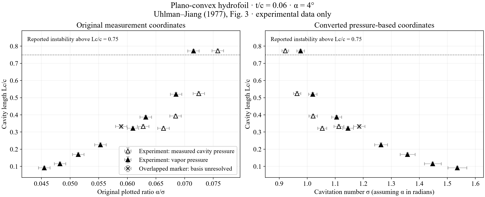

No universal percentage makes a cavitation result accurate. Numerical convergence, agreement with another code and comparison with measurements answer different questions. The current disk has a limited experimental dimension comparison. The hydrofoil free-boundary model has not passed experimental validation.
| Geometry | Completed evidence | Remaining limitation |
|---|---|---|
| Axisymmetric disk cavity | Four Waid experimental points at matched σ. At Nc = 128 the signed forward-length differences are +12.52%, −9.06%, +11.41%, +4.03%; radius-increment differences +2.84%, +2.90%, +2.18%, +0.80%. All four fine meshes pass the stated direct-field screens. | Unbounded image closure does not reproduce the free-surface tunnel, sting, gravity or physical closure. These are forward dimensions, not total cavity length or measured Cp validation. |
| 2D hydrofoil cavity | Fully wetted analytical/independent-code controls exist. Current cavity trials retain wet-pressure and detachment failures. A primary experimental benchmark and point reads are specified below. | No admitted, geometry-matched current-solver curve exists for this experiment. A converged rejected trial cannot be scored as physical validation. |
For the disk dimensions, doubling Nc from 64 to 128 changes forward length by at most 0.032% and radius increment by 0.049%. The observed 4–13% length disagreement therefore persists after this mesh check. Scan-reading bounds are approximately 2% in forward length; the source provides neither a complete experimental uncertainty budget nor a statistically justified pass band. These bounds cannot be presented as proof of agreement. No dimensions or closure coefficients were fitted to the measurements.
| Primary reference | Method and comparison | Meaning for this solver |
|---|---|---|
| Nouroozi, Pasandidehfard & Djavareshkian (2016), §8.3 | Source/doublet-ring BEM; simple and reentrant-jet cavity closures. The reported maximum 15% length difference is quasi-3D BEM versus 3D Fluent for elliptical-head cylinders. | It is not an experimental acceptance tolerance and not a hydrofoil validation case. Closure choices require separate tests. |
| Kinnas & Fine (1993) | Nonlinear potential BEM for a 2D partial cavity; extension to 3D cavity planforms. | Supports solving the unknown cavity boundary and checking detachment. Its 3D measurements cannot validate our 2D section by substitution. |
| Lemonnier & Rowe (1988) | Panel treatment with a wake; comparison with plano-convex hydrofoil measurements. | Wake displacement and closure affect the length–σ relationship. A good short-cavity comparison does not guarantee a long-cavity branch. |
| Brewer & Kinnas (1997) | Cavity BEM coupled to a boundary-layer treatment; measurements of detachment, reattachment and flow. | Its physical agreement cannot be attributed to an inviscid kernel alone. Detachment on a smooth foil needs special attention. |
| Phoemsapthawee et al. (2009), Table 1 | For its 3D noncavitating NACA0010 baseline, CL=.335 versus measured 0.355 (−5.63%); CD=.015 versus 0.025 (−40%). | Different observables have very different errors. These are not cavity-length errors; the omitted viscous contribution matters for drag. |
Detailed source audit · Machine-readable evidence matrix. No unreported percentage has been estimated from a claim of “good agreement.”
The benchmark is Uhlman & Jiang (1977), MIT83481-2 / DTICADA045767, Figure3 (PDF page 24, printed page 14). It is the experiment behind the plano-convex comparison in Alavi & Roohi’s review, Figure139, via Lemonnier & Rowe. The upper surface is parabolic and the lower surface flat: t/c=.06, chord 4 in, span 19.75 in, in a 20 in-square tunnel. NACA0006 is not the same geometry.
A reconstruction from the report’s geometric description is z/c=4(0.06)(x/c)(1−x/c) above a flat lower surface. This is a reconstructed profile, not an original coordinate file. The first benchmark uses α=4° and measured cavity pressure Pc: σc=(p∞−Pc)/(½ρU²). Filled vapor-pressure markers and open measured-Pc markers are distinct data and must not be merged.

Five resolved open and eight resolved filled triangles are transcribed separately, with one ambiguous overlapping marker retained as unassigned. The open point at l/c≈.773 remains included. The report flags instability above l/c=.75; that point stays visible but is not a steady-branch acceptance target. The plotted α/σ ratio is retained directly. Conversion to σ assumes α in radians and is labelled as an inference. Per-point velocity and Reynolds number are unavailable; the facility’s 9.1 m/s maximum is not assigned to the measurements.
Status: experimental dataset prepared; current-solver comparison not completed. Before an accuracy percentage is meaningful, the solver must use the actual profile, declared detachment and closure, the correct pressure definition, and accepted boundary checks. The α=2° case is unsuitable as the sole initial target: the original report itself discusses theory underprediction and possible midchord cavitation there.
Open-Pc point reads, pixel calibration and limitations · Pc CSV · All pressure series and ambiguous marker · All-marker CSV. No current-solver hydrofoil prediction is drawn on this figure.
A small discrete residual alone does not establish physical accuracy. No universal “within 15%” acceptance rule is adopted.